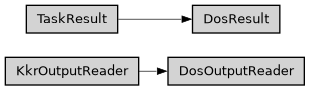

dos
Full name: ase2sprkkr.outputs.readers.dos
Module class hierarchy

Description
Density of states (DOS) reader and result.
Classes
|
DOS task has no special parser, it just has a special result, that allow easy acces to spc output file |
|
Density of states (DOS) results provides access to the computed density of states in the DOS output file, using the :py:attr:dos property. |